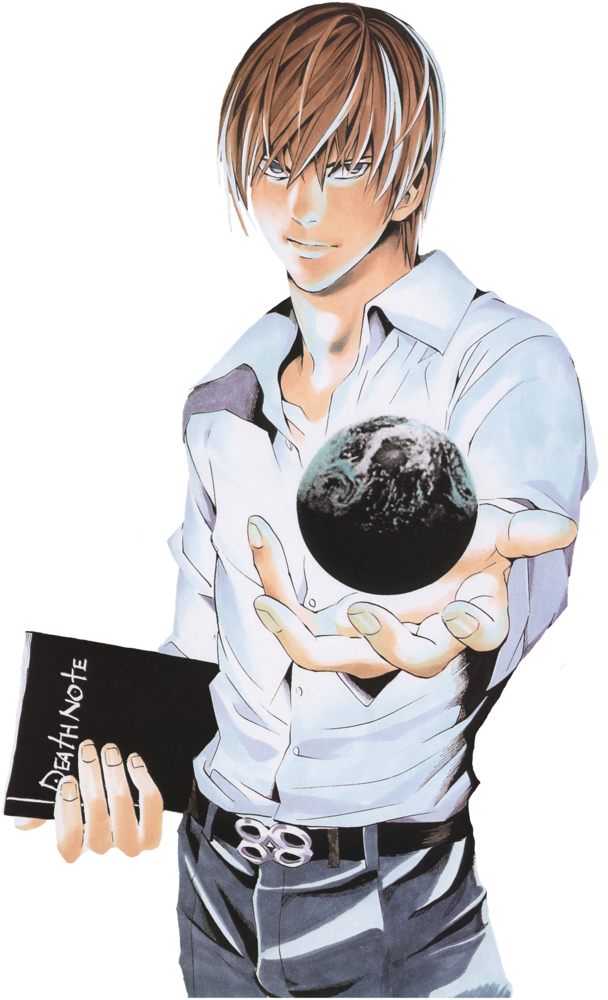

Light is a young man, standing at above average height with light-brown hair and
brown eyes. During Part I, when not wearing his school uniform, which consists of
a tan suit and red tie, he dresses fairly casually, sometimes sporting a dress shirt
underneath a jacket or a V-neck sweater with a collared t-shirt underneath. During Part
II, if not wearing a similar style of clothes, he is seen wearing a suit.
Light is characterized as hardworking, talented, and a natural genius. Highly perceptive
and good with problem solving skills, Light is a skilled planner and good at mapping out
scenarios. Furthermore, Light is very popular among peers and adored by his family members.
However, his high intelligence and constant praise from adults laid the foundation for an
intense level of hubris which quickly took effect once he obtained the notebook.